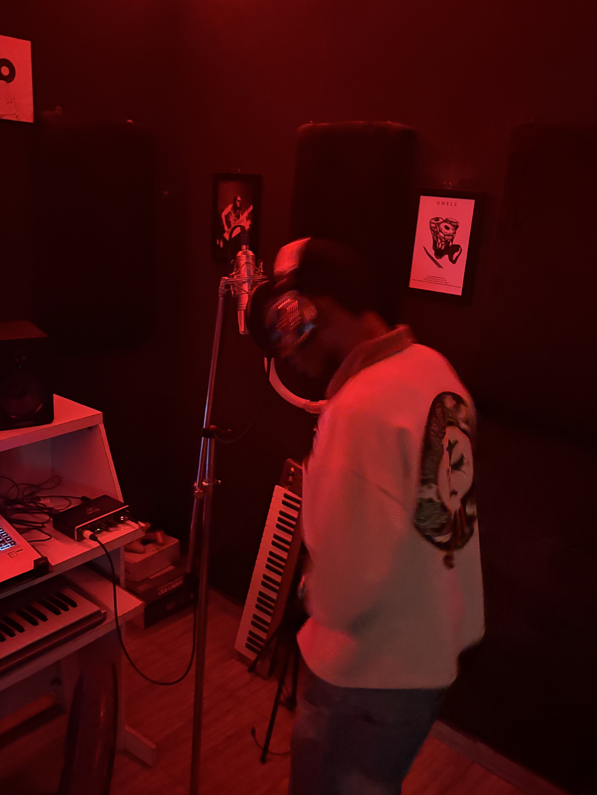
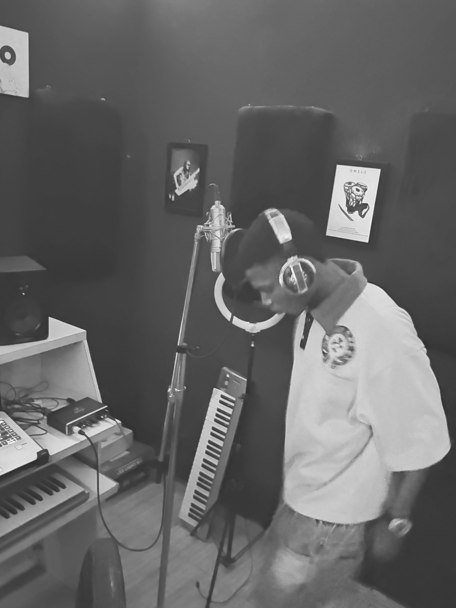

About Bozisco
Bozisco is the stage name of Akintunde Boluwatife Olayinka, a Nigerian artist from Ogun State whose sound blends Afro-inspired music and soul.
With a focus on melody, storytelling and energetic performance, Bozisco is building his identity through recorded music and live appearances.
Latest Music
Gallery




Connect with Bozisco
Follow Bozisco for music, performances, photos and updates.
InstagramMusic / Fanlink